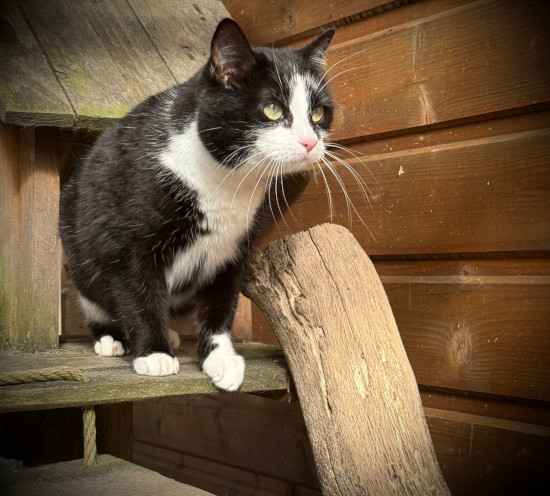
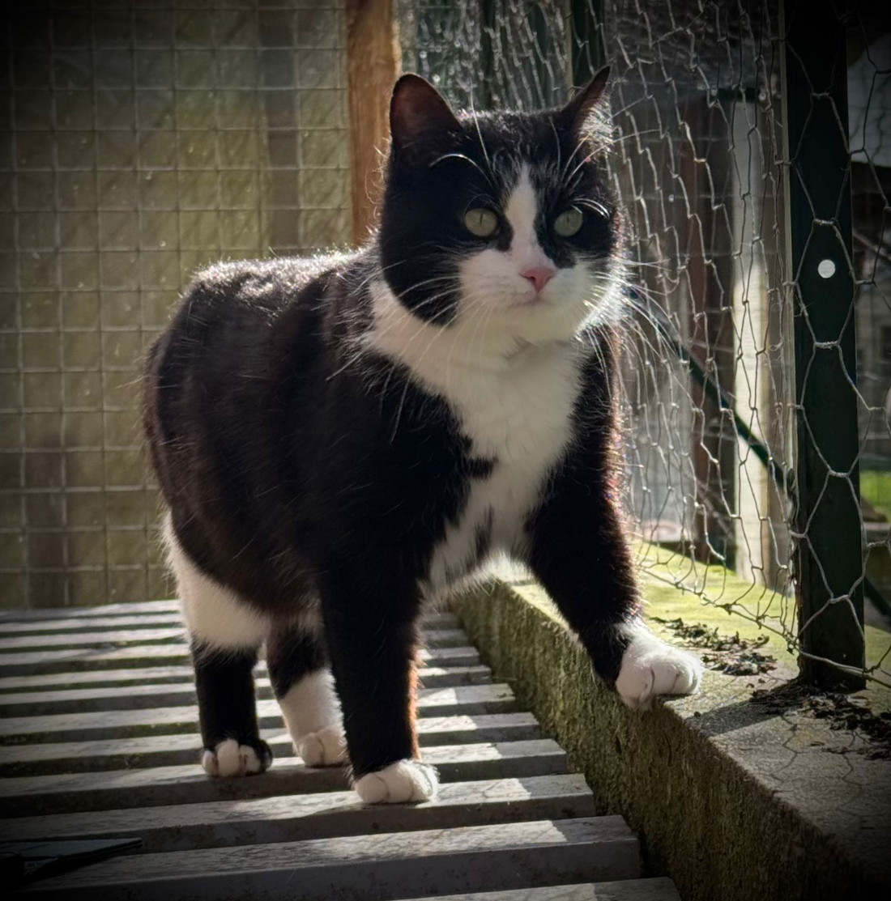
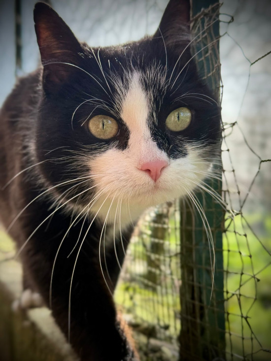

Mimine – Princesse
J’ai passé mes premières années de vie chez une personne âgée, qui m’a donné un toit, de la nourriture, ma liberté et surtout de la douceur et beaucoup de calme… Cette vie douce et plutôt à l’abri des interactions humaines ne m’a pas permis d’améliorer ma timidité. Craintive de nature, il semblerait que je me sois habituée à vivre dans le silence de la nature, sans cris et pieds qui piétinent dans tous les sens.
Par exemple, mon plaisir favori est de me faufiler jusqu’au point le plus haut que je peux atteindre et d’en faire mon mirador. J’adore observer mes congénères, les humains, les oiseaux par la fenêtre… et faire ma commère ! Je suis effectivement une petite bavarde ! J’aime discuter avec les humains pour essayer de leur transmettre tout ce que j’ai appris durant mes moments de garde. Mais ils ne comprennent pas grand-chose...
Après ces premières présentations, vous vous inquiétez peut-être un peu de mes capacités à vivre en famille. Alors je vous rassure tout de suite ! J’adore les caresses ! J’en raffole ! Alors, ok, j’aime qu’on arrive vers moi tranquillement et qu’on m’offre la douceur de câlins tout doux et délicats – que voulez-vous, je suis une princesse m’a dit tata ! D’ailleurs, elle a lancé les paris dans l’association : elle pense qu’en 2 jours, vous pourrez me caresser !
Autre qualité : je ne suis pas gourmande pour un sou. De plus, je me fiche de mes congénères ; ils ne m’inquiètent pas, mais je n’en ai pas spécialement besoin – je me suffis à moi-même !
OK chien, OK chat, pas OK enfants bas âge.
En Résumé
- Femelle
- 1/1/2022
- D'une douceur absolue
- 160 euros
Son caractère
- timide
- Calme
Actuellement
- Stérilisée
- Vermifugée et déparasitée
- Vaccinée
- Testée FIV/FeLV négative
- Cromac


